منصّة علمية تفاعلية لاكتشاف الاتجاهات في نظام الأرض وتحليلها إحصائياً باستخدام بيانات رصد الأرض من وكالة ناسا — من اختيار المتغيّر والمنطقة، إلى بناء السلسلة الزمنية واختبار دلالة الاتجاه.
التحدّي
تحدّي ناسا Space Apps 2026 “Be An Earth System Trend Detective!”
الموقع المباشر
earthscope-space-apps.netlify.app
earthscope-two.vercel.app
يعمل في المتصفح مباشرة، دون حساب
محتوى الدليل
شرح المشروع كاملاً في 10 صفحات: الفكرة، البيانات، كل صفحات الموقع، المنهجية الإحصائية، والتقنيات
دليل المشروع · النسخة 1.0 · نوفمبر 202601 / 10
الفكرة والتحدّيEARTHSCOPE
01التحدّي وفكرة الحل
متغيّرات كثيرة… واتجاهات تختلف من منطقة لأخرى
يتغيّر نظام الأرض باستمرار، وعندما يسير التغيّر في اتجاه ثابت — ارتفاعاً أو انخفاضاً — تعكسه المتغيّرات المقاسة. لكن المتغيّر نفسه قد يزداد في منطقة وينقص في منطقة مجاورة حتى لو كانت العملية الفيزيائية واحدة، كما أن كثرة المتغيّرات تجعل اختيار ما يدلّ على التغيّر وتحليله أمراً صعباً. يطلب التحدّي أداةً تختار متغيّرات من البعثات الفضائية والنماذج، وتعرض تغيّرها عبر الزمن، وتحدّد ماذا يتغيّر وأين وبكم، وهل التغيّر ذو دلالة إحصائية.
كيف يلبّي EARTHSCOPE متطلبات التحدّي الأربعة
متطلب التحدّي
الحل في المنصّة
1. تحديد المتغيّرات
استوديو اكتشاف يضم 19 متغيّراً في أربعة مجالات (الغلاف الجوي، اليابسة، المياه، المحيطات) مع تعريف مبسّط لكل متغيّر، وسبب أهميته، والبعثة أو النموذج الذي يقيسه (MODIS، OMI، AIRS، GPM، MERRA-2، GLDAS…).
2. جلب البيانات لمنطقة محدّدة
اختيار دولة بالنقر أو البحث، أو منطقة علمية مسمّاة، أو رسم مستطيل، أو إدخال إحداثيات. تُجلب البيانات مباشرة من واجهة NASA POWER لكل خلايا الشبكة داخل حدود المنطقة.
3. بناء سلسلة زمنية وعرضها
سلاسل شهرية تمتد حتى 45 سنة (1981–2025)، تُعرض كقيم سنوية مع خط الاتجاه، وقيم شهرية مع متوسط متحرّك، وشذوذات بعد إزالة الدورة الموسمية.
4. معدّل التغيّر واختبار الدلالة
اختبار مان-كندال، وميل سين مع فترات ثقة 95%، والانحدار الخطي مع اختبار t المصحّح للارتباط الذاتي، واختبار كندال الموسمي — كلها محسوبة داخل المتصفح.
لمن صُمّمت المنصّة؟
لطلاب المدارس الثانوية والجامعات والمهتمين بالعلوم: كل مصطلح علمي له شرح مبسّط، وكل نتيجة تُقرأ بلغة واضحة، مع عروض توضيحية يمكن مشاهدتها خطوة بخطوة — لتحويل المستخدم إلى «محقّق بيانات».
19
متغيّراً علمياً موثّقاً
45
سنة من البيانات الشهرية
640
نقطة في أطلس الاتجاهات العالمي
677
اختباراً آلياً للمحرّك الإحصائي
كيف تعمل المنصّة من الداخل؟
1سؤاللغة طبيعية
2متغيّر + منطقةكتالوج و خريطة
3جلب البياناتNASA POWER لكل خلية
4متوسط مكانيموزون بخط العرض
5تحليل إحصائيMK · Sen · OLS
6تفسير وتقريردليل ≠ فرضية
يحدث كل ذلك داخل المتصفح خلال ثوانٍ: تُطلب البيانات من خوادم ناسا مباشرة، وتُخزَّن مؤقتاً على الجهاز لتسريع إعادة التشغيل، ثم تُحسب الإحصاءات محلياً — دون خادم خاص ودون إرسال أي بيانات شخصية.
مبدأ الأمانة العلمية: لا توجد أرقام مختلقة في المنصّة. كل رقم إمّا مجلوب مباشرة من ناسا، أو من لقطة بيانات حقيقية مؤرّخة، أو من ملف يستورده المستخدم. البيانات الاصطناعية الوحيدة هي «محاكي الدلالة» التعليمي، وهو موسوم بوضوح بعبارة «محاكاة · بيانات اصطناعية».
عنوان كبير «الأرض تتغيّر دائماً» وزرّان: ابدأ تحقيقك واستكشف الأرض.
مثلثات خضراء ▲ لمناطق ازداد فيها الهطول، ومثلثات برتقالية ▼ لمناطق قلّ فيها — فقط الاتجاهات ذات الدلالة الإحصائية.
شريط «قياس عن بُعد» يعرض النقطة تحت الشمسية (حيث تكون الشمس عمودية الآن) محسوبة لحظياً، وليس رقماً تزيينياً.
قصة التمرير بخمسة أقسام
التحدّي: «كوكب واحد… ملايين الإشارات البيئية».
الاكتشاف: صور حقيقية من خدمة NASA GIBS لآخر شهر متاح لكل طبقة.
العلم: سجلّ الجليد البحري في القطب الشمالي كل سبتمبر — ينخفض 0.72− مليون كم² كل عقد (p < 0.001، 48 سنة) محسوباً في متصفحك.
التحقيق بأربع خطوات، ثم دعوة للاستكشاف.
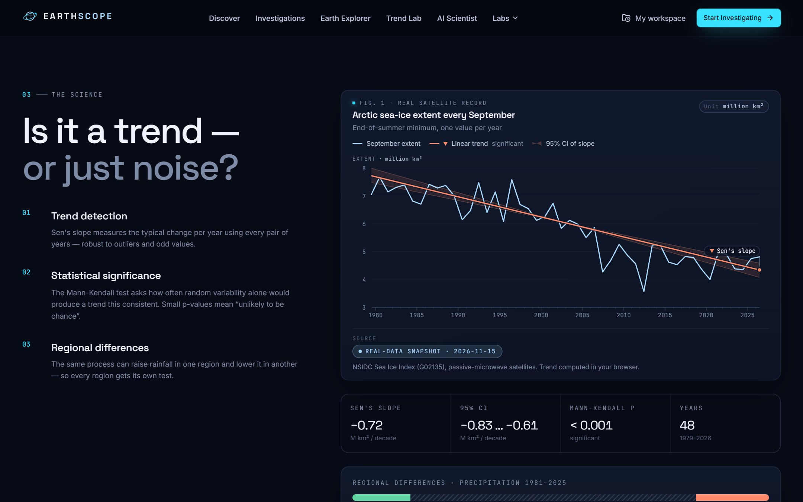
قسم «العلم»: مخطّط حقيقي لبيانات الأقمار الصناعية (NSIDC) مع ميل سين وفترة الثقة، وبطاقات النتائج.
EARTHSCOPE · دليل المشروع03 / 10
استوديو الاكتشاف ومصادر البياناتEARTHSCOPE
03استوديو الاكتشاف
ماذا يمكنك أن تحقّق فيه؟
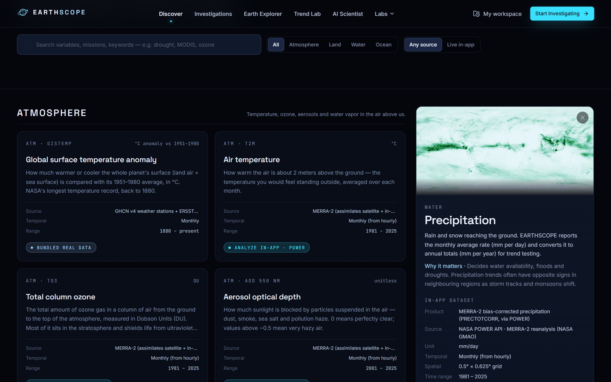
استوديو الاكتشاف: بطاقات المتغيّرات مصنّفة حسب المجال، ولوحة تفاصيل تعرض صورة حقيقية من GIBS، والمنتج والوحدة والدقة الزمنية والمكانية والمدى الزمني والتغطية، والأقمار الصناعية التي تقيس المتغيّر.
لكل متغيّر شارة توضّح كيف تحصل على بياناته بصدق: تحليل مباشر · NASA POWERبيانات حقيقية مدمجةاستيراد من Giovanni / AppEEARS
مصادر البيانات
المصدر
طريقة الاستخدام
ماذا يقدّم
NASA POWER
مباشر
سلاسل شهرية من إعادة التحليل MERRA-2: الحرارة، الهطول، رطوبة التربة، بخار الماء، الأوزون، الهباء الجوي، التبخّر، عمق الثلج.
NASA GIBS
مباشر
صور الأرض الحقيقية وطبقات بيانات شهرية (حرارة، هطول، NDVI، حرارة سطح البحر، الجليد البحري، GRACE…).
NSIDC Sea Ice Index
لقطة حقيقية
امتداد الجليد البحري في القطبين من الأقمار الصناعية منذ 1978.
MODIS (ORNL DAAC)
لقطة حقيقية
مؤشر الغطاء النباتي NDVI لنقطة في الساحل الإفريقي ونقطة في الأمازون منذ 2000.
NASA GISTEMP v4
لقطة حقيقية
شذوذ متوسط حرارة سطح الأرض العالمي منذ 1880.
Giovanni، AppEEARS، CDO، KNMI
استيراد CSV
أي سلسلة زمنية تصدّرها هذه الأدوات (IMERG، GLDAS، MODIS…) تُحلَّل بالطريقة نفسها داخل المنصّة.
وتعرض صفحة «الموارد والمنهجية» كل الموارد الثلاثة عشر المذكورة في صفحة التحدّي — بما فيها موارد وكالة الفضاء الكندية (RCM، SWOT، Geo.ca، دليل SAR) — مع توضيح كيف تُستخدم كلٌّ منها في المنصّة.
EARTHSCOPE · دليل المشروع04 / 10
معالج التحقيقEARTHSCOPE
04معالج التحقيق والعروض التوضيحية
من سؤال بلغتك… إلى تحقيق علمي في ست خطوات
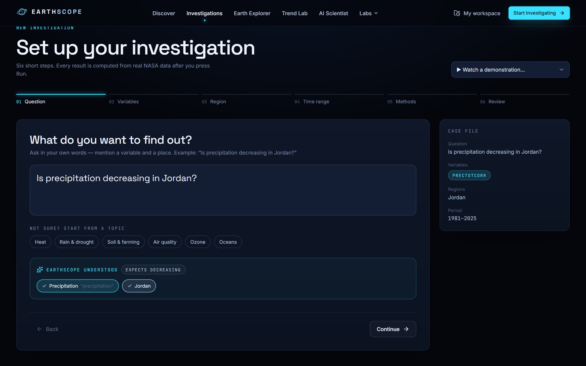
الخطوة الأولى: اكتب سؤالك مثل «هل يتناقص الهطول في الأردن؟» فيفهم المحلّل اللغوي المتغيّر (الهطول) والمنطقة (الأردن) والاتجاه المتوقّع (تناقص).
الخطوات الست
السؤال: بلغة طبيعية، أو باختيار موضوع جاهز (الحرارة، المطر والجفاف، التربة والزراعة، جودة الهواء، الأوزون، المحيطات).
المتغيّرات: حتى أربعة، مع تعريف كل منها وتوضيح «مباشر» أو «استيراد».
المنطقة: خريطة تفاعلية، بحث، رسم مستطيل، أو إحداثيات — وحتى أربع مناطق للمقارنة.
الفترة الزمنية: مع التحقق من توفّر البيانات لكل متغيّر.
الطرق الإحصائية ومستوى الدلالة α.
المراجعة: تحقّق آلي من الأخطاء والتحذيرات قبل التشغيل.
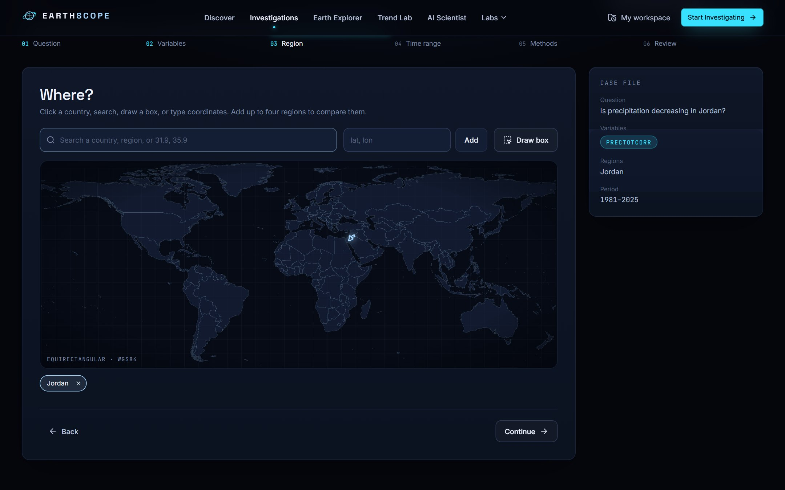
الخطوة الثالثة: اختيار المنطقة على خريطة العالم.
«شاهد عرضاً توضيحياً»: ستة تحقيقات جاهزة تعمل تلقائياً خطوة بخطوة مع تعليق صوتي مكتوب (الأردن، المقارنة الإقليمية، القطب الشمالي، الأمازون، الهباء فوق سهل الغانج، الساحل مقابل إيبيريا). النتائج لا تُكتب مسبقاً — بل تُحسب من البيانات الحقيقية لحظة التشغيل.
EARTHSCOPE · دليل المشروع05 / 10
مساحة العملEARTHSCOPE
05مساحة عمل التحقيق
بيئة بحث علمية بثلاثة أعمدة
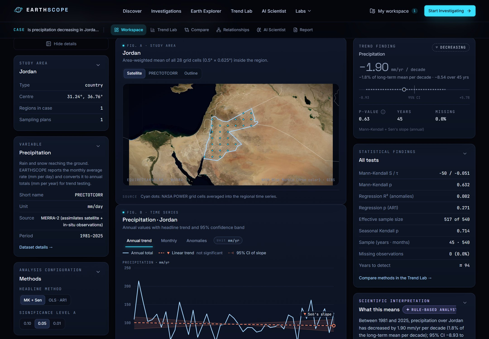
تحقيق «هل يتناقص الهطول في الأردن؟» ببيانات حقيقية مجلوبة مباشرة من ناسا لجميع خلايا الشبكة الـ28 داخل حدود الأردن.
العمود الأيمن · التفاصيل
المنطقة، المتغيّر وتعريفه، مجموعة البيانات، الفترة، إعدادات التحليل (الطريقة الرئيسية و α)، وجودة البيانات ومصدرها ورابط الطلب الأصلي.
الوسط · الخريطة والمخطّطات
خريطة المنطقة بصورة أقمار صناعية حقيقية مع نقاط الشبكة المستخدمة، ثم مخطّط السلسلة: القيم السنوية مع الاتجاه وفترة الثقة، أو الشهرية، أو الشذوذات.
العمود الأيسر · النتائج
بطاقة النتيجة (الاتجاه، المقدار لكل عقد، فترة الثقة، قيمة p)، جدول كل الاختبارات، والتفسير العلمي مع الفرضيات.
ماذا وجدنا في الأردن (1981–2025)؟
−1.90
ملم/سنة لكل عقد (ميل سين)
0.63
قيمة p — غير دالّ إحصائياً
−8.93 … +5.78
فترة الثقة 95% تتضمّن الصفر
≈ 94
سنة لازمة لاكتشاف اتجاه بهذا الحجم
كيف تقرأ النتيجة؟ التقدير يشير إلى انخفاض بسيط (1.8% من المتوسط لكل عقد)، لكن البيانات متوافقة مع «عدم وجود اتجاه». تنبّه المنصّة إلى أن سجلاً أطول قد يغيّر الحكم، وتقترح فرضيات قابلة للاختبار (مثل انزياح مسار العواصف) وتوسمها بوضوح «غير مُختبرة».
EARTHSCOPE · دليل المشروع06 / 10
مختبر الاتجاهاتEARTHSCOPE
06مختبر الاتجاهات والمنهجية الإحصائية
ما مدى تأكّدنا من وجود تغيّر؟
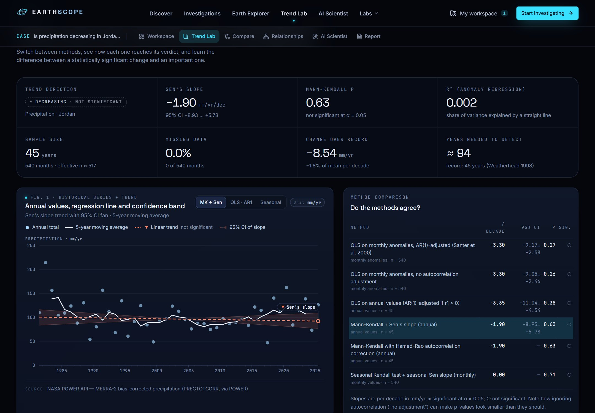
مختبر الاتجاهات: بطاقات إحصائية، مبدّل الطرق، مخطّط الانحدار مع «مروحة» فترة الثقة والمتوسط المتحرّك، وجدول «هل تتفق الطرق؟».
الطرق الإحصائية المستخدمة
اختبار مان-كندال مع تصحيح القيم المتساوية — للقيم السنوية.
ميل سين (وسيط كل الميول الزوجية) مع فترة ثقة Gilbert.
انحدار خطي على الشذوذات الشهرية مع تصحيح الارتباط الذاتي (Santer 2000).
السنوات اللازمة للاكتشاف (Weatherhead 1998) والتحكم بالاكتشافات الخاطئة للخريطة (Benjamini–Hochberg).
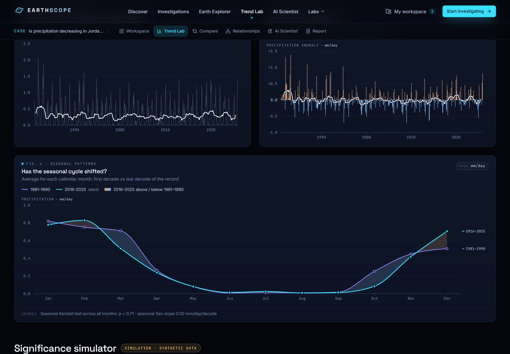
هل تغيّرت الدورة الموسمية؟ في الأردن: أمطار أقل في آذار وتشرين الأول، وأكثر في كانون الأول (2016–2025 مقابل 1981–1990).
موثوقية الحساب: المحرّك الإحصائي مكتوب بالكامل داخل المشروع ومغطّى بـ677 اختباراً تتطابق نتائجها مع مكتبتي SciPy وpymannkendall بدقة تقارب 10⁻⁹.
ويوضّح المختبر الفرق بين الدلالة الإحصائية والأهمية العملية، ويضم محاكي الدلالة التعليمي (بيانات اصطناعية موسومة) لإظهار كيف يجعل طول السجل الاتجاهَ الصغير دالاً.
EARTHSCOPE · دليل المشروع07 / 10
مستكشف الأرضEARTHSCOPE
07مستكشف الأرض
كرة أرضية «تنبسط» إلى خريطة
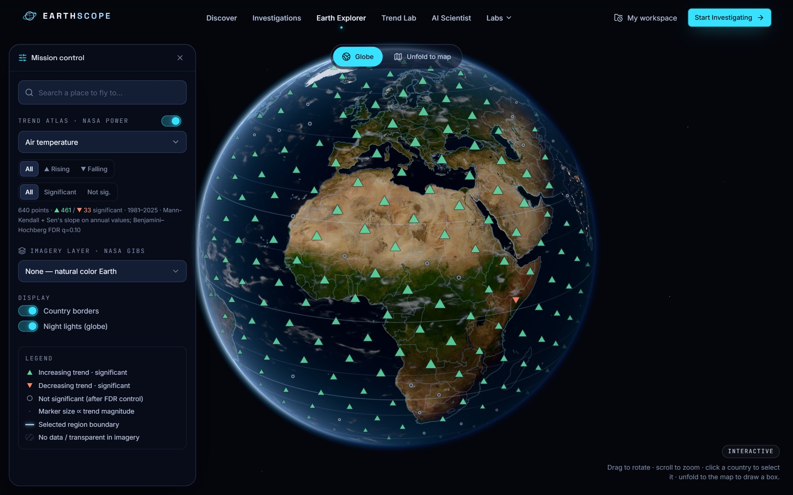
وضع الكرة: أطلس اتجاهات حرارة الهواء — 640 نقطة متساوية المساحة: ▲ 461 اتجاه احترار دالّ، ▼ 33 اتجاه تبريد دالّ، والدوائر المفرغة غير دالّة.
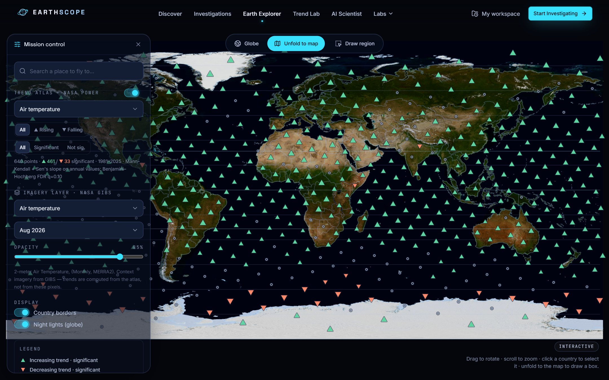
وضع الخريطة: بعد «فتح» الكرة، مع طبقة حرارة MERRA-2 الشهرية من GIBS، ومنطقة مختارة (تشاد) تبقى محدّدة أثناء التحوّل.
تحوّل حقيقي وليس خدعة
شبكة ثلاثية الأبعاد واحدة يتحوّل كل رأس فيها من الإحداثيات الكروية إلى الخريطة المستطيلة، وتلتصق بها الحدود والمؤشرات والطبقات.
تفاعل كامل
تدوير وتكبير بالفأرة أو اللمس أو لوحة المفاتيح، نقر لاختيار دولة، رسم مستطيل على الخريطة، وبحث عن أي مكان.
أداء ووصولية
رسم عند الحاجة فقط، وتحرير ذاكرة الرسوميات، وخريطة SVG بديلة إن لم يتوفّر WebGL، واحترام إعداد «تقليل الحركة».
EARTHSCOPE · دليل المشروع08 / 10
المقارنة الإقليمية ومختبر العلاقاتEARTHSCOPE
08المقارنة الإقليمية ومختبر العلاقات
المتغيّر نفسه… في أماكن مختلفة
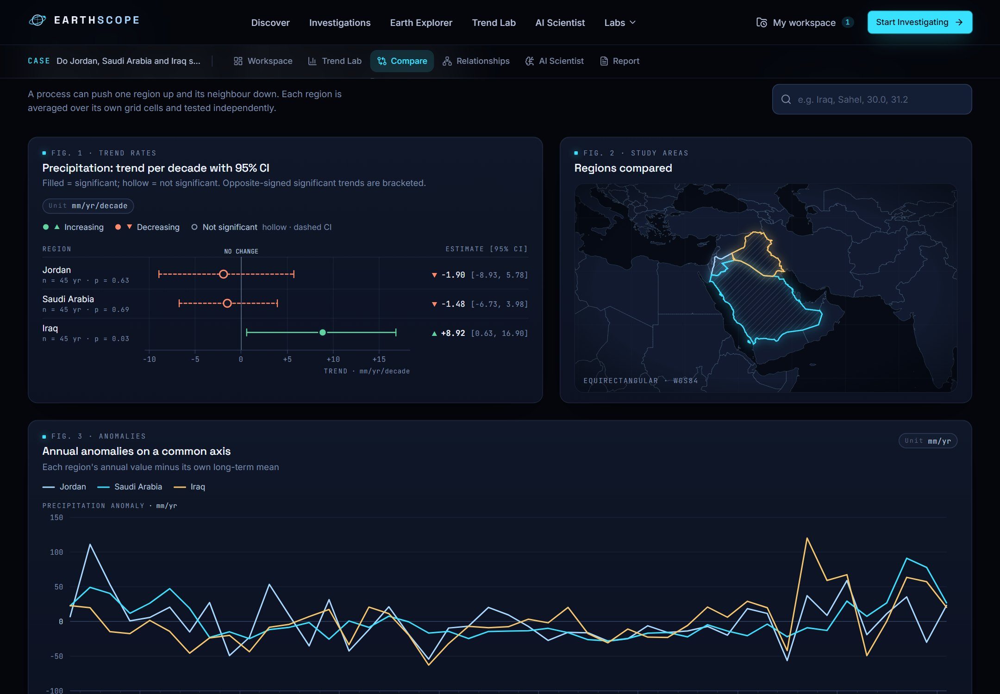
الأردن مقابل السعودية مقابل العراق (الهطول 1981–2025): مخطّط «غابي» لمعدّلات الاتجاه مع فترات الثقة، وخريطة المناطق، والشذوذات على محور مشترك، وجدول الفروق وتوفّر البيانات.
المنطقة
الاتجاه (ملم/سنة لكل عقد)
قيمة p
الحكم
خلايا الشبكة
العراق
+8.92
0.03
▲ ازدياد دالّ
14 (عيّنة منتظمة)
الأردن
−1.90
0.63
◇ غير دالّ
28 (كل الخلايا)
السعودية
−1.48
0.69
◇ غير دالّ
23 من ≈547
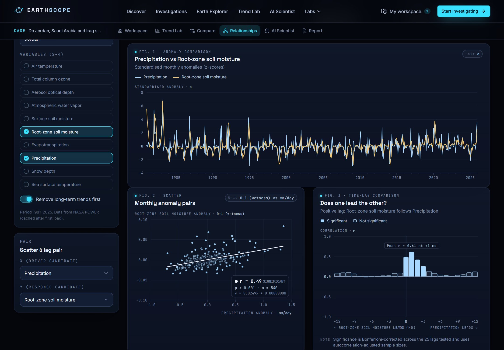
مختبر العلاقات (الأردن): الهطول ورطوبة التربة في منطقة الجذور — ارتباط r = 0.49 (p < 0.001)، وأقوى ارتباط r = 0.61 بتأخّر شهر واحد: التربة تستجيب للمطر بعد شهر.
الارتباط لا يعني السببية: تزيل المنصّة الدورة الموسمية والاتجاهات الطويلة قبل حساب الارتباط، وتصحّح قيم p للارتباط الذاتي (Bretherton) ولتعدد التأخيرات المختبرة (Bonferroni).
EARTHSCOPE · دليل المشروع09 / 10
العالِم الذكي، التقارير، والتقنياتEARTHSCOPE
09العالِم الذكي والتقارير العلمية
تفسير موثوق… وتقرير جاهز للنشر
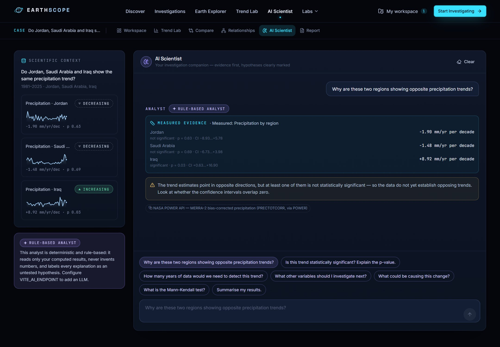
العالِم الذكي: يجيب من النتائج المحسوبة فقط، ويفصل «الدليل المقاس» عن «الفرضيات». هنا يصحّح افتراض السؤال: اتجاه واحد فقط دالّ، فلا يمكن الجزم بأن الاتجاهات متعاكسة.
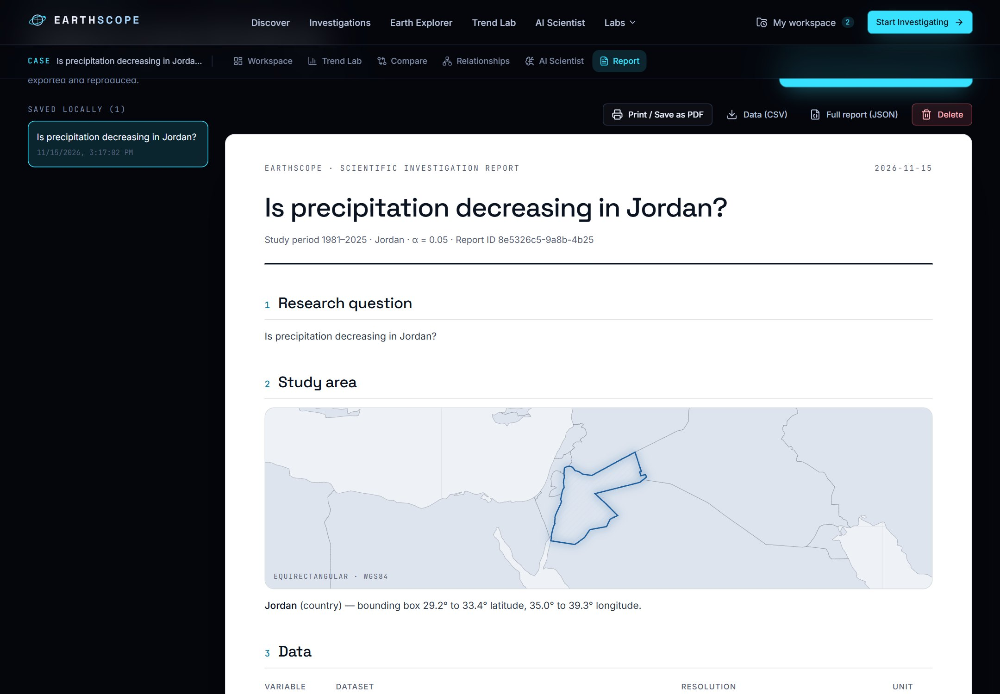
التقرير العلمي: سؤال البحث، منطقة الدراسة، البيانات، المنهجية، النتائج والمخطّطات، التفسير، عدم اليقين، القيود، والمراجع — مع طباعة PDF وتصدير CSV و JSON.
البيانات: مشروع NASA LaRC POWER، خدمة NASA GIBS / ESDIS، مركز NSIDC، ORNL DAAC، و NASA GISS. EARTHSCOPE مشروع مستقل ضمن تحدّي Space Apps وليس منتجاً رسمياً لوكالة ناسا. استُخدمت أدوات ذكاء اصطناعي في المساعدة على بناء البرنامج.